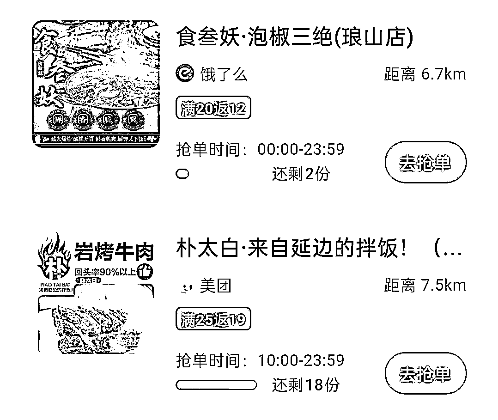
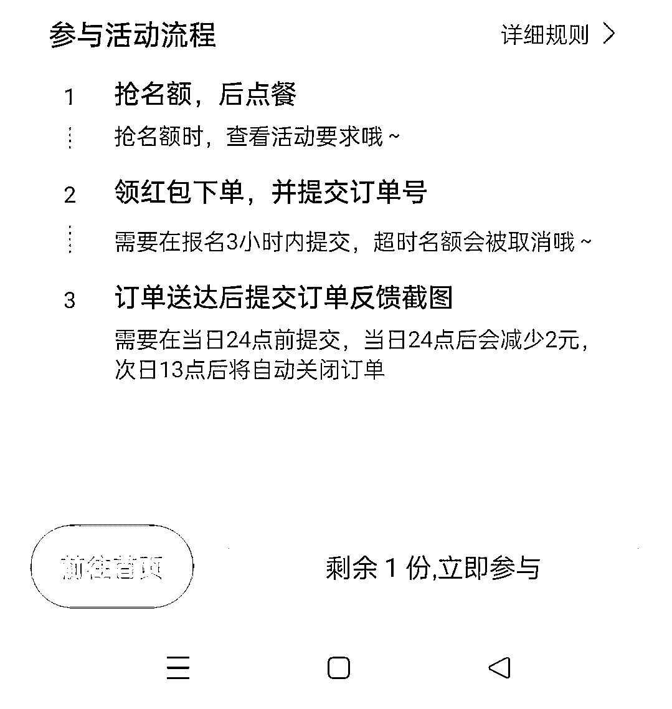
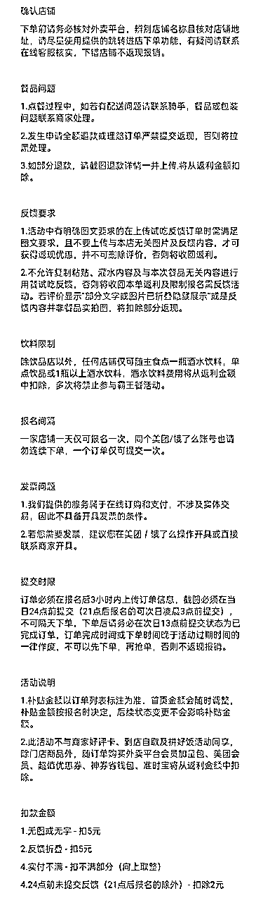
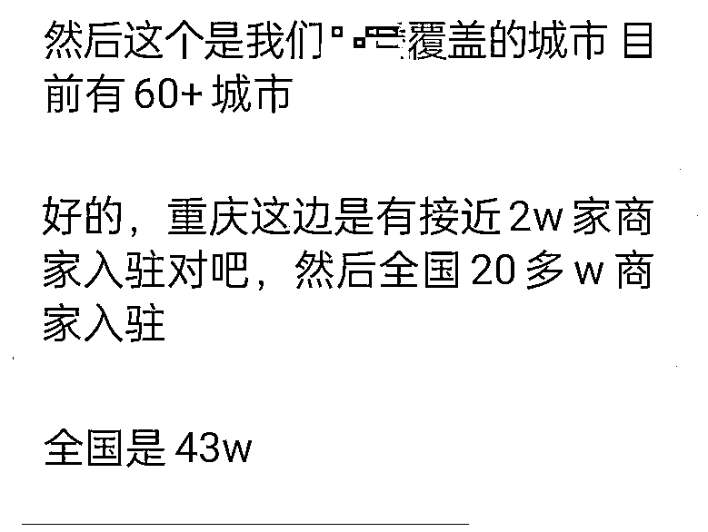
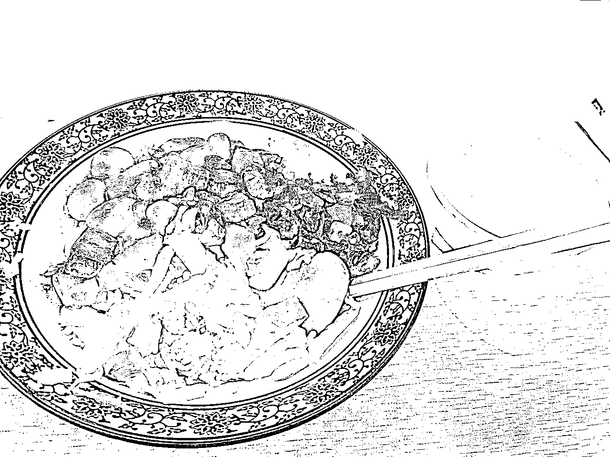
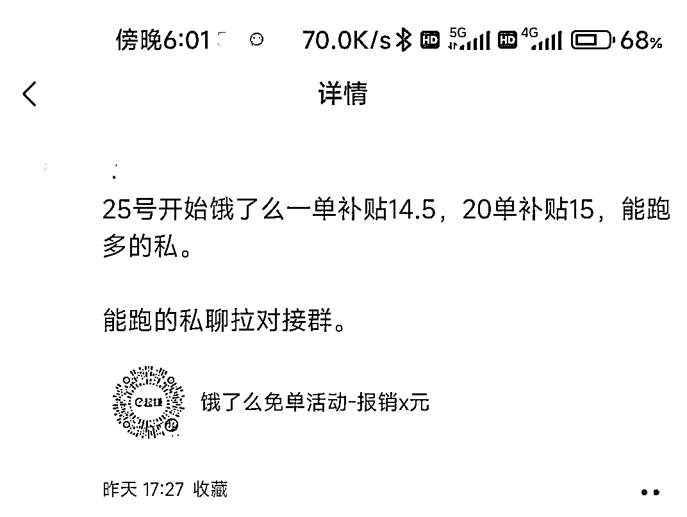
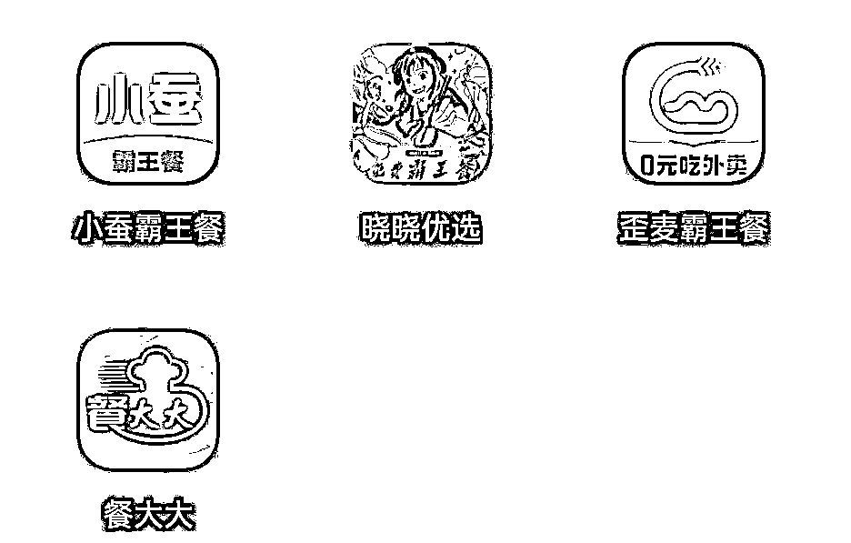
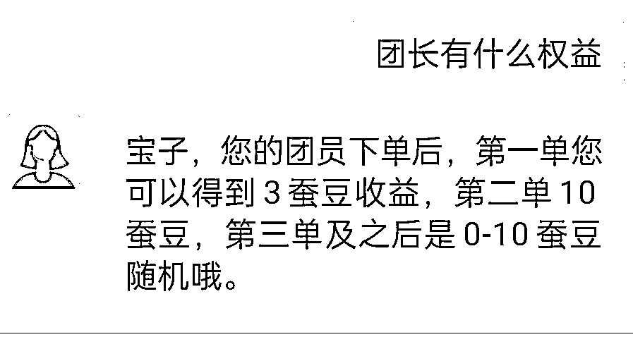
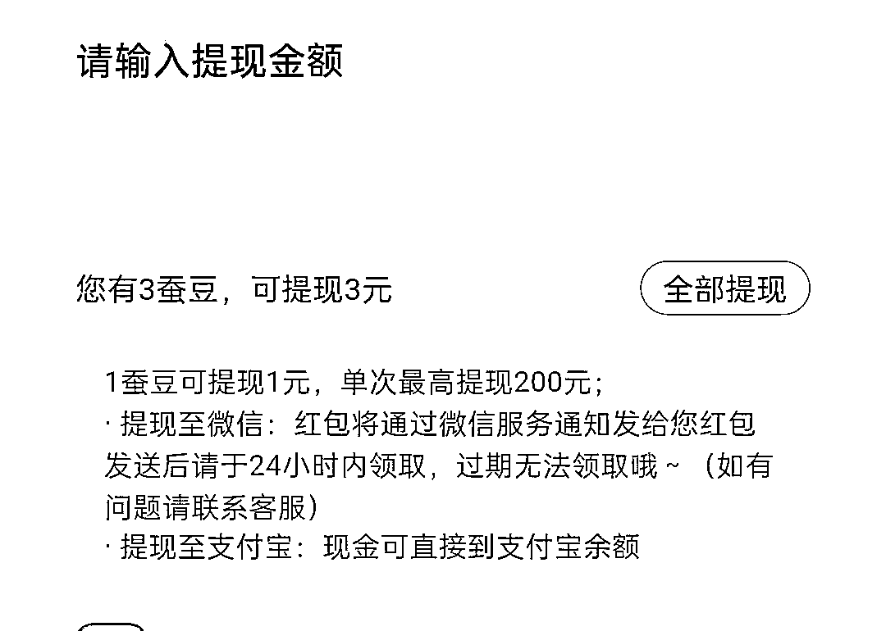

来源：https://xpjursanoo.feishu.cn/docx/L0Nld2z2Hobr7yxztnWcq8tDnLq
大家好，我是文少～去年418加入的生财，现在也算是半个老新人了，做过三期志愿者，目前在做的项目有视频号和抖音无人直播，这期风向标拆解终于选上了，来交作业了哈哈，这几天花时间去调研了一下关于霸王餐的一些信息，有些心得想和大家分享一下，希望这篇文章能够给生财圈友们一些帮助。
每当时间来到饭点左右，在某些名为霸王餐的APP上你就能看到不少不同品类的外卖商家陆续开放霸王餐名额，在店名的旁边会标注类似“满20返15”、“满25返19”的高返利字样。

这些商家会首先标明需要下单的平台，比如美团或饿了么，在不同时间点放出不同数量，不同满返力度的霸王餐。
例如一些店铺全天24小时可抢单，但一些店铺会分上下午时段放单，以此确保店内全天走单均匀，不会超负荷运转。一些标记了“大牌”的餐饮店还会限制下单频率，如“三天内限抢一单”或“需要是霸王餐LV2等级以上用户”。
只要按照平台的要求去指定店铺下单，收到货后写五星好评，然后回填单号和相关好评截图就能够收到平台的返利，合计算下来一顿外卖不会超过10元。


这对于上班族和外卖重度用户来说简直就是超额福利，可以为他们节约大量的点外卖成本，只要用户参与一次后就会深深的爱上。
同样价值的东西，我能花更少的钱买到，何乐而不为呢？
所以，用户对霸王餐APP的粘性和转化都是极高的。
那霸王餐平台怎么盈利的呢？
这个逻辑比较简单，也是类似于中介抽佣的模式，比如一笔外卖订单是20元，商家给霸王餐平台是15元的返利，那霸王餐APP就会给用户返12或者13元，自己留下2～3元。
可千万不要小看这3元，虽然利润少，但是量是非常大的，如果一天十万单，那盈利不就是30万么，一个月就是900万。
我司旗下在做的一个小说推文项目，利润也只有几块，但每天视频和直播的拉新激活数量差不多有几千个。
“量大就能出奇迹”。
商家入驻美团或饿了么APP无非就是想增加曝光获得更多的流量，而流量无非就是老顾客和新顾客，老顾客点外卖一般会直接搜索这家店，但新顾客就只能靠平台说了算。
对于新顾客来说，在下单之前都会先看看店铺的距离，送货率以及评价等数据为参考信息。
而商家想要自己的店优先推送在用户面前，要么花钱购买平台的相关广告服务，要么就只有把销量和好评做上去依靠算法的权重把自己送上去。
购买平台的相关广告服务就类似电商付费投流一样，这种除了价钱贵以外还不一定有效果，完全是属于开盲盒的心情。
所以，对商家来说最低成本的方式就是把销量和好评做上去。
返利给好评这种操作其实早就已经存在，比如拜托亲戚熟人下单；在外卖中附送评价返现扫码卡片；附送水果、饰品等小礼物；在店铺附近找路人做地推等等都属于类似的操作。
但这些操作的效率较低，有时还会通过手机号、wifi地址、下单频率等被后台判定为刷单，带来封店等后果。
于是，需求就诞生了，这些冒出的霸王餐APP能给店铺带来更安全稳定的客源，为了这些稳定的客源，商家也愿意付费。
有需求、有付费动机、跑通商业模式，霸王餐app自然而然聚合起商家"付费获得好评"的需求，成为游走在系统规则边缘，上不得台面，但又确实有生存空间的生意。
为此，趁着吃饭的点我特意去采访了几家入驻霸王餐APP的店铺。
第一家老板告诉我效果还行，他每天至少在霸气餐APP放20单左右，多的不敢放，不然就亏了，他说他有些同行放的比他还多，有的至少在100单以上。
当时我就惊讶了，如果按一天100单算的话，一个月就是3000单，霸王餐APP的利润就是3000x3=9000元，关键是这还是只是一家店的利润。
那如果是再多1万家，10万家这样的店呢？
据某霸王餐平台内部工作人员透露，目前他们平台光重庆地区入驻的商家就有接近2w家，全国更是有43w商家入驻，而且这个数据还在上涨中。

然后我问老板为啥想入驻这种霸王餐APP，他说自己偶尔也是需要刷些好评单，其次是其它同行都入驻了，如果自己不入驻 后面销量肯定会被甩下去。
我又继续问他：“不亏本吗？”
他说：“短期来看是亏本的，但只要能在我承受的范围内把好评和销量做上去就是划算的”。
问完之后为了表示感谢，我在他家点了一个盖饭。

随后，我又去问了一家店，这家店是我常去吃的地方，老板告诉我，他这家店开了8年了，平时都靠老顾客或者过路人到店里吃，虽然有入驻霸王餐APP，但隔好几天才放出一单，因为我不需要刷太多好评，我靠的是实打实的实力。
我问他那为啥想着入驻呢？
他说有时难免会遇到个别两个客户会给差评，我的目的就是把这些差评抹掉。
可能看我是老顾客，老板后面还给我看了他给霸王餐APP负责人线下结算的聊天记录。
最后一家店跟第二家差不多，老板告诉我现在人手不够，自己这边的单量都忙不过来，打算取消这个返利了😂
所以，总的来说对于这种刷单好评，新店和销量不行的店一般是需求最旺盛的，对于那种有回头客的老店和销量还不错的店需求不大。
但现实是销量多，好评多的店永远只占少部分，大部分商家还是需要这种服务的。
那既然需求这么广，原本就在做外卖的两大平台是不是也会入场？
答案是肯定的，而且已经在做了，甚至我还猜测抖音等一些做本地生活相关的应用未来也会加入其中。

因为从目前来说，还是有很多用户没有用过霸王餐APP这种东西，甚至可能都没听说过，我要不是在生财，可能也不会知道这东西。
所以市场空间还是很大的。
在了解了霸王餐的玩法和盈利模式后，作为普通人的我们有机会通过外卖霸王餐赚到钱吗？
答案是有的，普通人虽然不具备建设这种第三方平台的能力，但我们可以作为一个单点切入这条线上。
目前市面上有近十种霸王餐平台，分APP和小程序两种形态。
我这里就下了4个APP，还有很多其它的，大家感兴趣的话可以去搜搜。
这些APP的用法和返利额度都差不多，要说区别的话无非就是入驻的商家可能有些不一样。

这里说一些我想到的普通人也能变现的方式，也欢迎各位大佬在评论区补充。
1、点外卖薅羊毛
这也是最简单的方式，如果自己也有点外卖的需求，那直接可以利用霸王餐APP点外卖，如果每天点两顿，一个月也可以省下近千元的外卖费。
2、成为APP的团长
外卖霸王餐可以分销自己的下级也就是帮APP拉新用户，团员下单的每一笔你都会获得佣金，如果自己有私域或者去做一个薅羊毛相关的账号去推广的话靠这个月入几千甚至上万也是有可能的。


3、结合美团圈圈的玩法。
前段时间比较火的美团圈圈cps分销也可以配合外卖霸王餐多获得一笔佣金，先在美团圈圈分销一个霸王餐APP上有的商品，然后用自己小号去点这个链接下单，最后再把单号和好评截图回填到外卖霸王餐APP上。
好了，以上就是我想到的普通人也能入局变现的方式，当然肯定还有其它变现方式，欢迎大佬们交流讨论。
我的拆解结束了，希望对大家有帮助，最后祝大家生财有术！